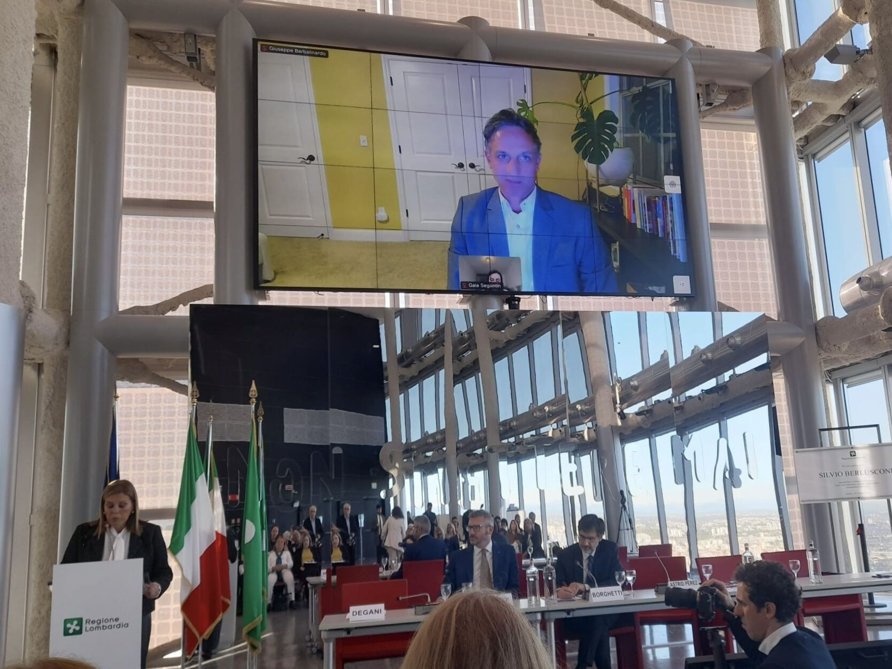
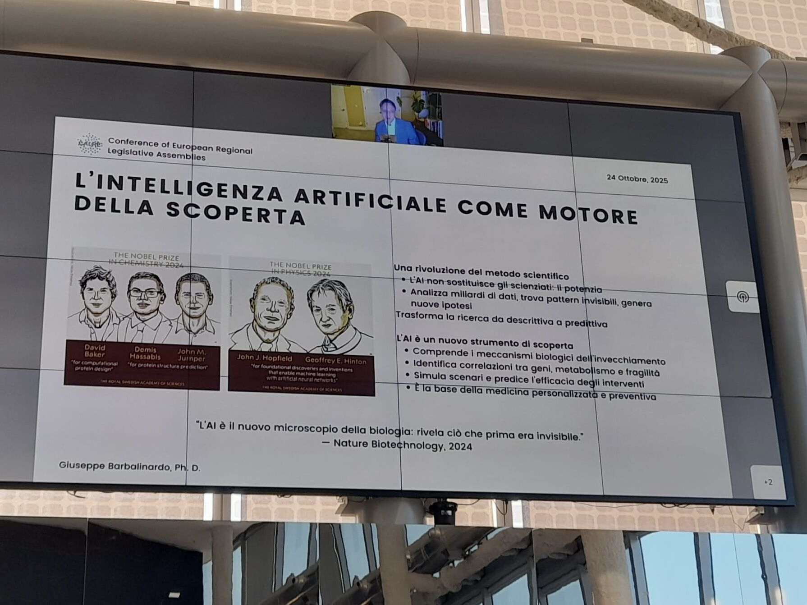
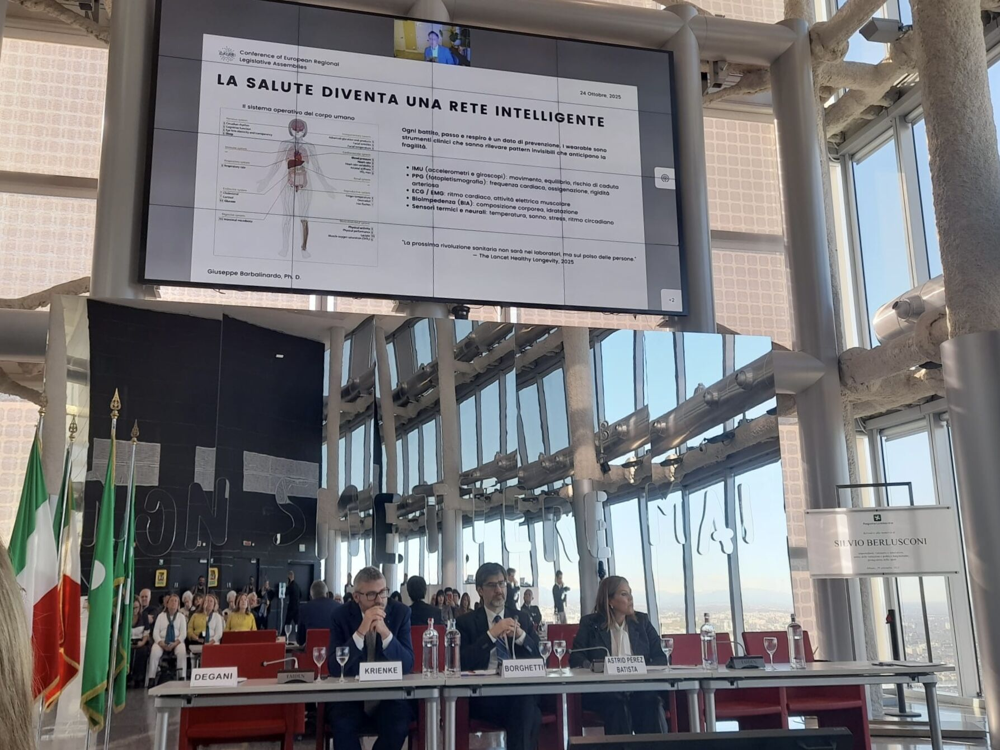
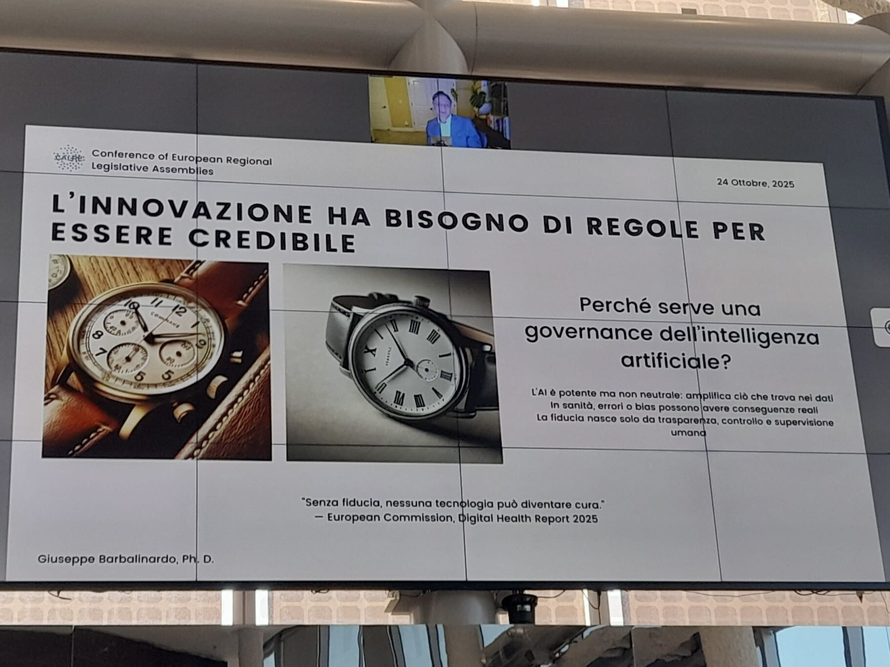

Technology for Active Aging

Speaking remotely at the CALRE Conference held at Palazzo Regione Lombardia, Milan - October 24, 2025
On October 24, 2025, I had the honor of speaking at the Conference of European Regional Legislative Assemblies (CALRE) held at Palazzo Regione Lombardia in Milan. The event, titled "Services and New Technologies in Europe for the Health of People Over 65," brought together European legislators, researchers, and public health leaders to discuss how innovation and artificial intelligence can serve an aging population.
My presentation focused on technologies for active aging: how artificial intelligence and innovation can support autonomy and address the challenges of fragility. What follows is a summary of the key ideas I shared with the assembly.
Europe's Longevity Challenge
Europe is aging. Today, roughly 22% of the European population is over 65. Projections suggest that by 2050, one in three European citizens will be over 65. This is not a crisis to lament but a conquest to celebrate, though it comes with real costs and demands serious planning.
Italy stands at the center of this demographic shift. It is one of the most long-lived nations in the world, with 24% of its population already over 65 and a median age of 48.4 years. By 2050, 35% of Italians will be over 65. Italy's National Health Service invests roughly 130 billion euros per year in healthcare, equivalent to 6.7% of GDP and about 2,600 euros per person annually. These numbers make it clear that the intersection of longevity and public health is not a peripheral issue. It is a central policy challenge.
The Secret to a Longer Life
Before diving into the role of technology, I wanted to share a foundational distinction. We all understand lifespan: the total number of years we live. But healthspan is a newer and arguably more important concept. It refers to the years lived in good health, with full autonomy and functionality.
Traditional medicine, sometimes called "Medicine 2.0," intervenes when problems arise, typically around age 65. It extends lifespan by treating illness, pushing life expectancy from perhaps 80 to 85. But a more modern approach, "Medicine 3.0," argues that we should not wait for problems to appear. Instead, we should begin anti-aging interventions early, starting in our twenties and thirties. This way, if medical interventions are eventually needed, they start at 80 rather than 65, and total lifespan can be pushed toward 100. Extending healthspan, in other words, naturally extends lifespan as well.
So what is the single most impactful thing we can do? The answer, supported by a study of over half a million people across ages 21 to 90, is clear: physical activity. Ten or more hours of metabolic activity per week corresponds to an average of four additional years of life.
Physical activity, both aerobic and resistance training, improves glucose homeostasis, body composition, cardiorespiratory function, mobility, mitochondrial function, muscular strength, cognitive capacity, and slows the decline of muscle mass. There are four key pillars for extending healthspan: strength and balance, aerobic capacity, nutrition and sleep, and social connection. Together, these improve physical capacity, reduce falls, protect the heart and metabolism, reduce chronic inflammation, and stimulate memory, endurance, and mental resilience.
The critical insight is that aging is not a fixed process. It is modifiable. Functional decline is not destiny, and it is never too late to begin. Many causes of aging are behavioral and reversible.
AI as a Discovery Engine

AI as a discovery engine: recent Nobel Prizes in Chemistry and Physics awarded to AI pioneers highlight the technology's transformative role in scientific research
How does artificial intelligence fit into the science of longevity? First and foremost, as a discovery engine. The recent Nobel Prizes in Chemistry (for AlphaFold, a protein structure prediction system) and in Physics (for foundational work on artificial neural networks) underscore AI's central role in modern science. AI does not replace scientists. It empowers them.
AI analyzes billions of data points, finds invisible patterns, and generates new hypotheses. It transforms research from descriptive to predictive. It is a tool of discovery that helps us better understand the biological mechanisms of aging, identify correlations between genes, metabolism, and fragility, simulate scenarios we have not yet observed, predict the efficacy of interventions, and lay the groundwork for personalized and preventive medicine.
As Nature Biotechnology noted, "AI is the new microscope of biology: it reveals what was previously invisible."
I highlighted a recent project called CellSentence, developed by Professor Smita Krishnaswamy at Yale University and released as open source. The team encoded cellular data into a large language model, essentially creating a "GPT for biology." This model discovered a new potential therapy against a form of cancer, a discovery that was subsequently confirmed in the laboratory. It is a powerful example of how AI can generate verifiable biological hypotheses, even if only a fraction of them survive experimental validation.
AI as an Interface

The conference venue at Palazzo Regione Lombardia, with a slide on wearable health technology and the body as an intelligent network
Beyond discovery, AI serves as a powerful interface. It can reduce communication barriers, increase autonomy, and mitigate social isolation. Many of us already interact with AI daily through voice assistants like Alexa or Google Home. As these systems become more user-friendly and context-aware, they can help older adults with tasks ranging from ordering groceries to placing emergency calls.
But the most exciting frontier is wearable technology. Today's devices can read eye movements through smart glasses, detect hand gestures through wristbands using surface electromyography (sEMG), and even interpret subvocalized speech or brain signals through earbuds equipped with EEG sensors. These are not science fiction concepts. They are prototypes being developed by companies like Meta and others, and they are beginning to enter consumer markets.
When we map these capabilities onto the human body, the picture becomes clear. Wearable sensors already track sleep, heart rate, blood pressure, and more. Inertial measurement units (accelerometers and gyroscopes) measure movement, balance, and fall risk. Photoplethysmography monitors heart rate, blood oxygen, and arterial stiffness. ECG and EMG sensors track cardiac rhythm and muscular electrical activity. Bioimpedance sensors measure hydration, body fat, and body composition. Thermal sensors monitor temperature, stress, and circadian rhythms.
As The Lancet Healthy Longevity put it, "The next healthcare revolution will not be in hospitals but on the wrist." Every heartbeat, every step, every breath is a data point that can be used for prevention. Our body is becoming an operating system, and wearables are becoming clinical instruments capable of detecting invisible patterns and anticipating fragility.
Innovation Needs Rules to Be Trustworthy

Why AI governance matters: AI is powerful but not neutral - it amplifies what it finds in the data
I used a simple example to illustrate a critical point about AI governance. If you ask an AI to generate an image of a clock, it will almost always show the time as 10:10. Why? Because since the early 20th century, watchmakers have photographed their products at 10:10 to frame the brand logo nicely between the hands. Those images trained the AI, and now the bias is baked in.
The lesson for healthcare is serious. AI is powerful but not neutral. It amplifies whatever it finds in the data. In healthcare, errors and biases can have real consequences. As the European Commission's Digital Health Report 2025 stated: "Without trust, no technology can become a cure. Trust comes from transparency, control, and human oversight."
Responsible AI must be ethical and inclusive. It must represent all ages, all bodies, all ethnicities, and all cultures. Inclusive datasets lead directly to more equitable medicine. And human oversight by domain experts must remain the cornerstone of every clinical decision.
Europe is leading the way on this front. The EU AI Act is the first global regulatory framework for artificial intelligence. It classifies AI systems by risk level: unacceptable (such as psychological manipulation of children), high (such as staff recruitment, assisted surgery, and critical infrastructure), limited (chatbots and human-machine interaction), and minimal (spam filters). Healthcare AI falls squarely in the high-risk category, subject to strict requirements around security, traceability, and accountability. Two other important regulations complement this framework: the European Health Data Space, which promotes data interoperability, and the Medical Device Regulation, which governs the standards wearable health devices must meet.
The Role of Institutions
Institutions are the bridge between innovation and citizens. They fulfill this role by providing infrastructure, specifically the digital platforms that connect hospitals, local services, home care, doctors, and citizens in a secure and transparent way. They incentivize innovation by leveraging sensors and wearables to monitor falls in real time, track blood pressure and heart rate, measure balance and sleep, and build automatic alerts that can notify family members or doctors. AI becomes a clinical support tool that, under proper human supervision, enables a shift from reactive care to predictive prevention.
Institutions are also responsible for education and training: promoting digital literacy among older adults and healthcare workers, creating active aging centers that encourage physical exercise, rehabilitation, and digital skills, and training professionals who can integrate technology with humanity.
Finally, there is the matter of funding, regulation, and incentives. Public funding must support prevention as an investment, not just a cost. Equity and territorial access criteria must be integrated into health funding for AI. Policies should reward outcomes and incentivize autonomy.
Science, Technology, Policy, Humanity
I concluded my presentation with a virtuous circle: science, technology, and policy working together. Science tells us why aging happens and that it is modifiable and preventable. Technology helps us measure and predict, with AI uncovering new techniques. And policy guarantees trust, ensures equitable access, and invests in prevention as an economic strategy, not just a healthcare line item.
Longevity becomes an opportunity, a national and European project. I left the assembly with this thought:
"Longevity is our shared project and our shared future. Science, technology, policy, and humanity walk together to give more life to our years, not just more years to our life. We can live better, and therefore live longer."
More about the event: LinkedIn post | Lombardia Quotidiano coverage | Official program (PDF)